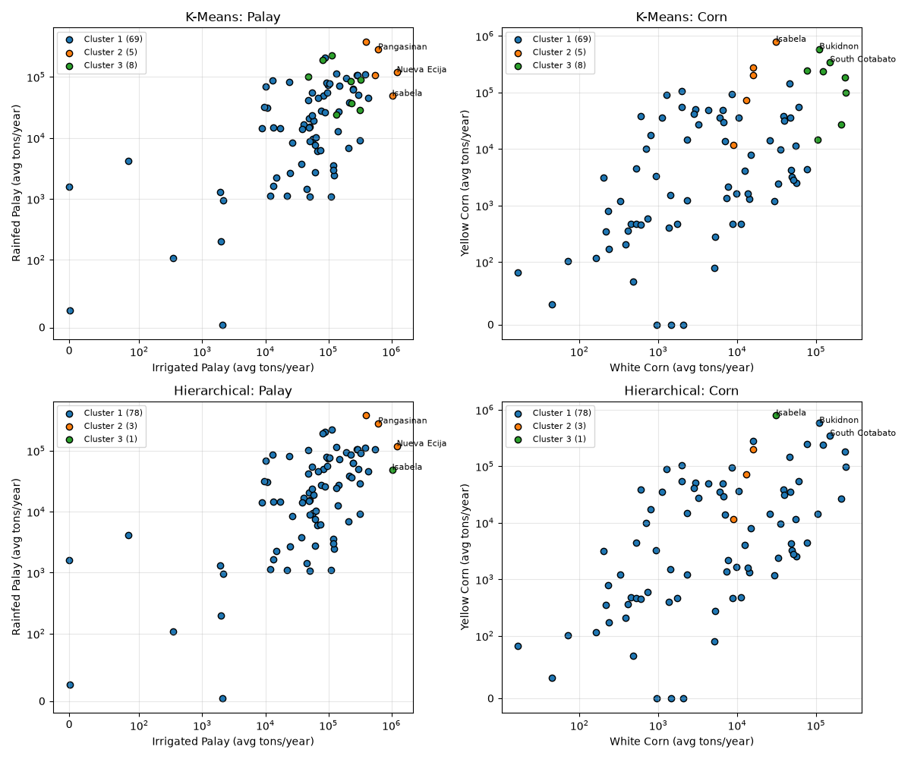
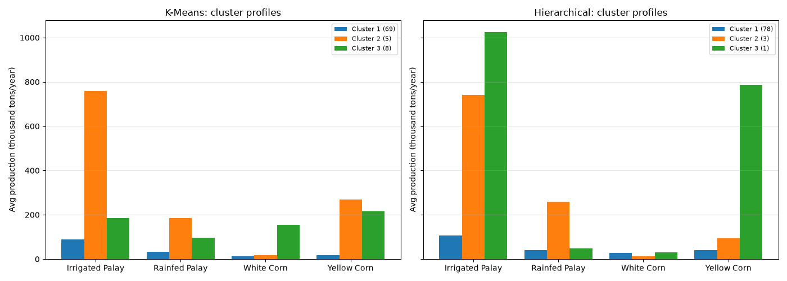
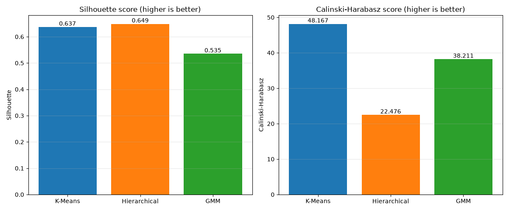

Group: Mga Alipin ng 170
Members
Palay and corn are grown in almost every province in the Philippines, but the amount each province produces varies a lot. Some provinces produce more palay while others produce more corn. In this project, we aim to group Philippine provinces to discover the natural groupings of Philippine provinces based on their palay and corn production.
Agriculture plays a big role in the Philippines, as about 43% of the country's land is agricultural. It employs about 1 in 5 Filipino workers (20.7% as of December 2025). Palay and corn make up 27% of the country's total crop output. In 2025 alone, the country produced 19.68 million metric tons of palay, while corn production reaches about 8.3 million metric tons each year. Grouping provinces with similar palay and corn production can help us identify which provinces are major rice producers and which ones are major corn producers.
Dataset: Palay and Corn: Volume of Production in Metric Tons by Ecosystem/Croptype, Quarter, Semester, Region and Province, 1987–2026 from the PSA Statistical Database.
Source: PSA Statistical Database
We used the data from 1990 to 2025, which is 144 quarters. After preprocessing, the dataset has 82 samples (provinces).
Features (averages of all the years):
- Irrigated Palay
- Rainfed Palay
- White Corn
- Yellow Corn
We only used clustering methods so that all three solve the same task and can be compared fairly. All methods were coded from scratch in Python and each method uses the same feature matrix.
This project does not split the data into training and testing sets. Clustering is an unsupervised task, so there are no correct labels to predict, so there is nothing to hold out and test against.
k = 3 for the three methods
We used k = 3 for all three methods since we want to separate the major palay producers, the major corn producers, and the remaining smaller producers.
Provinces plotted by palay and corn production, colored by cluster.

Average yearly production of each crop per cluster.


We used Claude mainly for preprocessing the data and for debugging our code. We reviewed all of the code written with its help and can explain it.